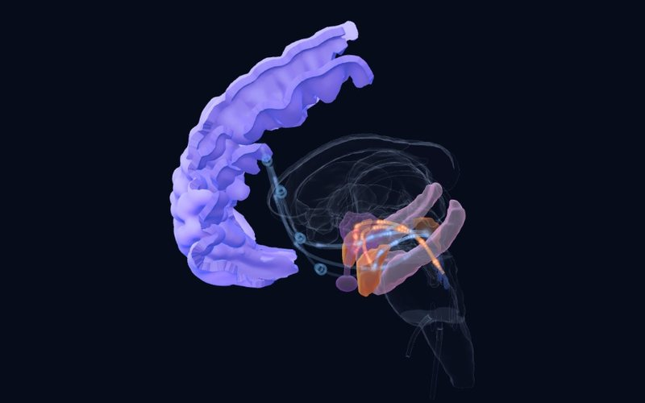
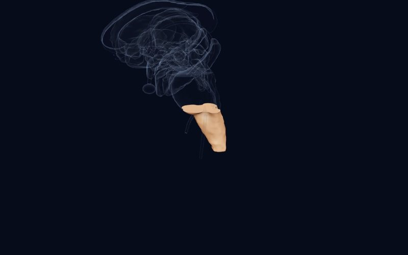

Boletín · Edición 2 · 16 de octubre de 2026
Del trauma temprano al circuito del miedo
En esta edición seguimos la huella de la experiencia temprana desde el cerebro hasta la clínica y de nuevo hasta la célula: el trauma que deja su marca en un lugar distinto del que esperamos, una comparación de dos tratamientos habituales para el TEPT infantil, un mapa de las emociones evocadas por estimulación directa del cerebro humano y una explicación celular de por qué se generaliza el miedo.
Los estudios de esta semana
ARevisión sistemática, metaanálisisTranslational Psychiatry2026
En la psicosis y el trastorno bipolar, la adversidad infantil deja su marca en la corteza prefrontal, no en el hipocampo
29 estudios, 3,056 pacientes con trastorno psicótico o bipolar (edad media 36.6)
DetallesCerrar
 Atlas
Atlas
Hallazgo
Se ha supuesto durante mucho tiempo que el hipocampo y la amígdala, ricos en receptores de glucocorticoides, son las regiones más afectadas por la adversidad infantil. Esta revisión reunió 29 estudios (3,056 pacientes) sobre adversidad infantil y volumen de sustancia gris en la psicosis y el trastorno bipolar. La mayoría de los estudios informó una asociación negativa entre la adversidad y la sustancia gris, pero esta apareció de forma más consistente en regiones prefrontales. Los metaanálisis del hipocampo (5 estudios) y de la amígdala (4 estudios) no hallaron asociación significativa.
Por qué es importante
La idea de que "el trauma encoge el hipocampo" no encuentra respaldo consistente en estos grupos de pacientes; el efecto de la adversidad puede captarse mejor en el plano cortical. En el atlas, la larga maduración de la corteza prefrontal apunta a por qué puede ser tan sensible.
Limitación
Pacientes adultos, alta heterogeneidad entre estudios y pocos estudios en los metaanálisis; el resultado no puede generalizarse directamente a los niños.
Petrova T, Tennfjord AØ, Cavero D, et al. Revisiting the link between childhood adversity and stress-sensitive brain regions in psychosis and bipolar disorder: a systematic review and meta-analysis. Translational Psychiatry. 2026. doi:10.1038/s41398-026-04457-w
ARevisión sistemática, metaanálisisEuropean Journal of Psychotraumatology2026
Sin diferencias claras entre TCC y EMDR en el TEPT de niños y adolescentes
5 ensayos aleatorizados, 248 niños y adolescentes (6–18 años)
DetallesCerrar

Atlas
Hallazgo
Este metaanálisis agrupó cinco ensayos aleatorizados (248 participantes) que comparaban directamente la terapia cognitivo-conductual (TCC) con EMDR en niños y adolescentes expuestos a trauma de 6 a 18 años. No hubo diferencias significativas entre ambos tratamientos en los síntomas de TEPT, ni según el informe del niño (SMD 0.18) ni según el de los padres (SMD 0.23). Los síntomas de ansiedad tampoco difirieron significativamente. Sin embargo, los síntomas depresivos fueron mayores en el grupo de TCC que en el de EMDR (SMD 0.44).
Por qué es importante
Sugiere que ambos tratamientos conservan su lugar en el TEPT infantil y que los síntomas concurrentes, la preferencia de la familia y la disponibilidad pueden orientar la elección.
Limitación
Muy pocos ensayos y seguimiento corto (solo uno con seguimiento a 12 meses); la diferencia en depresión debe interpretarse con cautela.
Meoon I, Khlaisuk A, Nansunanon S, et al. Systematic review and meta-analysis: the effectiveness of cognitive behavioral therapy and eye movement desensitization and reprocessing in children and adolescents. European Journal of Psychotraumatology. 2026. doi:10.1080/20008066.2026.2731855
BRevisión sistemáticaNeuroImage2026
Estimular las emociones en el cerebro humano: las negativas desde el lóbulo temporal medial, las positivas desde la cingulada
34 publicaciones, 2,434 pacientes con epilepsia, 14,492 estimulaciones
DetallesCerrar
 Atlas
Atlas
Hallazgo
La estimulación mediante electrodos de profundidad implantados antes de la cirugía de la epilepsia (SEEG) es una de las pocas formas de comprobar directamente cómo se representa la emoción en el cerebro humano. Esta revisión reunió 14,492 estimulaciones en 2,434 pacientes; solo el 3% evocó una emoción subjetiva, y el 78% de estas emociones fueron negativas. Las emociones negativas provinieron sobre todo de regiones temporales mediales y basales, mientras que las positivas provinieron con más frecuencia de la esperada de regiones cingulofrontales y subcorticales. La ínsula no mostró una valencia preferente y no hubo diferencias significativas entre hemisferios.
Por qué es importante
Son datos que comprueban de forma causal, en humanos, los mapas emocionales derivados de los estudios animales y de la neuroimagen. En el atlas, los vínculos de la amígdala y de la corteza cingulada anterior con las distintas valencias emocionales pueden seguirse con estos hallazgos.
Limitación
Los pacientes tienen epilepsia y los sitios de estimulación se eligieron por razones clínicas; los parámetros de estimulación difieren entre estudios.
Arrighi L, Bartolomei F, Pizzo F. Intracerebral stimulation inducing emotions in SEEG: a systematic review. NeuroImage. 2026. doi:10.1016/j.neuroimage.2026.122288
CEstudio animalNeuropsychopharmacology2026
Un freno inhibidor en la amígdala impide que el miedo se propague
Lee H et al.
DetallesCerrar
 Atlas
Atlas
Hallazgo
Distinguir una señal de amenaza de un estímulo inofensivo es una habilidad adaptativa, pero se comprende mal por qué esta capacidad varía entre individuos. En ratones, tras un condicionamiento auditivo del miedo, se reforzó la inhibición de las interneuronas parvoalbúmina positivas sobre las neuronas del engrama del miedo en la amígdala lateral, impulsada por un mayor número de receptores GABA-A con subunidad α1 (Gabra1) en las neuronas del engrama. Cuando se alteró esta inhibición, los animales mantuvieron su respuesta al tono condicionado pero también se congelaron ante tonos nuevos, es decir, el miedo se generalizó. Un represor transcripcional llamado ICER reducía la expresión de Gabra1, lo que limitaba esta plasticidad inhibidora y favorecía la generalización.
Por qué es importante
Ofrece una explicación celular, y una posible diana terapéutica, de cómo el miedo en el TEPT se extiende desde la señal del trauma original a estímulos similares e inofensivos. Puede ser el correlato biológico de la queja clínica de que "todo me dispara".
Limitación
Un estudio en ratones; aún no se ha demostrado que el mismo mecanismo opere en humanos.
Lee H, Lee S, Yoo T, et al. ICER-Controlled inhibitory plasticity of amygdala engram neurons regulates fear memory precision. Neuropsychopharmacology. 2026. doi:10.1038/s41386-026-02568-y
Estructura de la semana

Tronco del encéfalo
Medulla Oblongata
Centros vitales: ritmo respiratorio, corazón y presión arterial, deglución y vómito; el último paso entre el cerebro y la médula espinal.
Una pregunta para los lectores
Cuando un hallazgo muestra que el trauma no deja su marca donde esperábamos en el cerebro, ¿debería cambiar el lenguaje con el que explicamos a nuestros pacientes los efectos del trauma?
Puede enviar su respuesta por correo electrónico:
hello@thefoldedmind.comReferencias
- Petrova T, Tennfjord AØ, Cavero D, et al. Revisiting the link between childhood adversity and stress-sensitive brain regions in psychosis and bipolar disorder: a systematic review and meta-analysis. Translational Psychiatry. 2026. doi:10.1038/s41398-026-04457-w
- Meoon I, Khlaisuk A, Nansunanon S, et al. Systematic review and meta-analysis: the effectiveness of cognitive behavioral therapy and eye movement desensitization and reprocessing in children and adolescents. European Journal of Psychotraumatology. 2026. doi:10.1080/20008066.2026.2731855
- Arrighi L, Bartolomei F, Pizzo F. Intracerebral stimulation inducing emotions in SEEG: a systematic review. NeuroImage. 2026. doi:10.1016/j.neuroimage.2026.122288
- Lee H, Lee S, Yoo T, et al. ICER-Controlled inhibitory plasticity of amygdala engram neurons regulates fear memory precision. Neuropsychopharmacology. 2026. doi:10.1038/s41386-026-02568-y
Este boletín tiene fines educativos y no constituye consejo médico; consulte a su médico para las decisiones de diagnóstico y tratamiento. Los resúmenes están escritos con nuestras propias palabras a partir de los resúmenes de los estudios y de los textos completos de acceso abierto; consulte el artículo original para los detalles y los resultados definitivos.
Nivel de evidencia (como en el atlas): A consorcio amplio, metaanálisis o decisión regulatoria; B estudios replicados o caso clásico; C estudio único o pionero. Las prepublicaciones no han sido revisadas por pares.